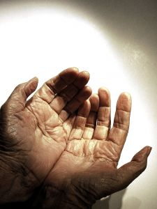

La higiene y el aseo del usuario se llevan a cabo con los fines siguientes:
- Observar cualquier signo que pueda ser orientativo de un problema
de salud (piel, sistema músculo-esquelético, conducta,
etcétera.)
- Conservar la integridad de la piel para que pueda realizar adecuadamente
sus funciones.
- Evitar la acumulación de secreciones y la proliferación
bacteriana, que favorecen la aparición de infecciones.
- Eliminar células descamadas y suciedad, y evitar el mal olor.
- Estimular la circulación sanguínea.
- Contribuir a mantener o mejorar la autoestima del paciente.
- Disminuir la temperatura corporal en casos de hipertemia.
- Mejorar su confort y bienestar.
- Favorecer la relación de ayuda, por la proximidad que requieren
los procedimientos.
|
|
 |